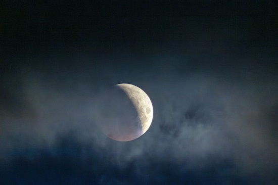
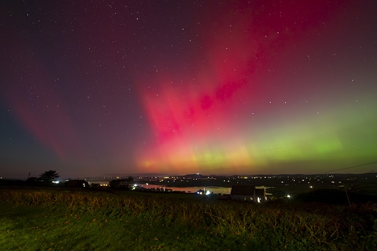
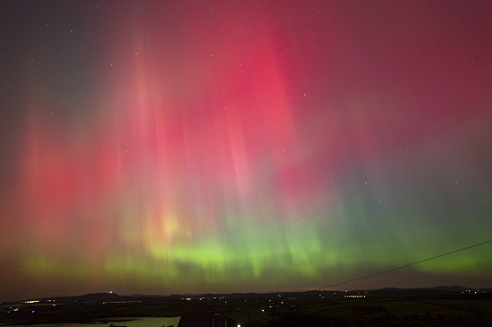
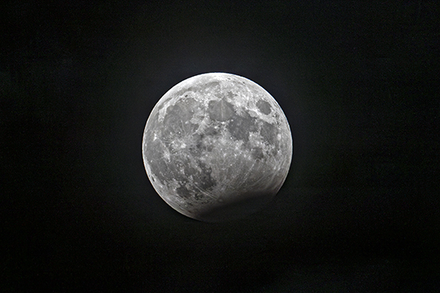
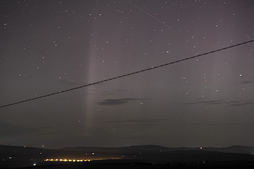
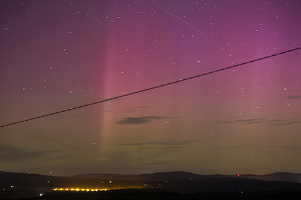

Some of our Pictures

Lunar Eclipse, about half an hour from totality, 6:00am 14th March 2025.
There was plenty of cloud around which completely obscured it thereafter. The classic Total Lunar Eclipse photo
shows a full deep-orange disc. But this is possibly more interesting: it captures all the elements in a single image: Earth's shadow, separating the more-illuminated region
in the Penumbra and the dimmer part within the full Umbra (the dimmer part illuminated by
sunlight diffracted ("bent") around Earth); and a hint of the orange colour starting to appear as the return light from lower part has more of the blue filtered
out by Earth's thicker-lower-down atmosphere. This is a single image (i.e. not a composite) and not re-touched.
Taken from Ballylynch (Magnus Burbanks).
Canon EOS 7Dmk2 + EF 400mm F/2.8L + 1.4x converter.


The fully naked-eye Aurora Borealis, 10th October 2024, from Ballylynch (Magnus Burbanks)
(compare to those taken the previous year, shown below - no comparison!)

Partial Lunar Eclipse from Ballylynch, 28th October 2023. (Magnus Burbanks)
Two versions of an Aurora Borealis image, taken 2:40am 13th Sep 2023 from Ballylynch (Magnus Burbanks).
Vertical columns were shifting constantly.

colour-adjusted to be truly as seen by the naked eye
i.e. streetlights yellow (Cones activated), but the sky in grey-hues (Rods only)

"as seen" by the camera, for which Rods & Cones are not a "thing".

The Milky Way from Ballylynch, August 2023. (Magnus Burbanks)
|